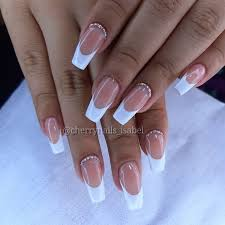

Manicura Clásica o Francesa
Este estilo atemporal es conocido por su elegancia y simplicidad. Se caracteriza por la aplicación de esmalte de uñas transparente o rosado pálido con las puntas de las uñas pintadas de blanco. Es una opción perfecta para ocasiones formales y para el uso diario.